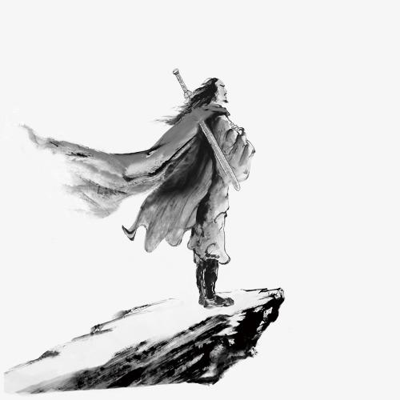

第八版
第八版

“兔葵燕麦，向残阳、影与人齐”——《夜飞鹊》。
夕阳总是带着一种独特的寂寞。
尤其当夕阳下只剩一个人的时候。
徐不疾在夕阳下，夕阳的颜色充斥了整个天空。
血一般的天际处，站着血一般的天涯人。
血般的世界里，只能见到穿着血般衣服的他。即使他穿的只是青灰色的土棉衣而已。
但在血一般的寂寥中有一抹黑色。
那是黑到发亮的黑色，就如同放了一整夜的墨汁一样，变成胶质一样的宿墨。
但这也不及得上徐不疾眼中的黑的万分之一，那是在被残阳映红的眼白中，闪着光的黑色。墨水变成宿墨需要一整夜，而徐不疾花了二十年。
二十年！
足够了。
在这乱世中，二十年足够将一个刚刚来到世界的婴儿变成一个寂寞的天涯人。但寂寞的天涯人却不会有这么黑亮的眼睛。
寂寞的人很多，寂寞的天涯人也很多，但徐不疾这样的人却不多。
因为他们没有一把刀。
那是一把他手紧紧握着的刀：漆黑的眼，漆黑的刀！
当夕阳渐渐消逝，天色暗淡时，天边远远的出现一点市镇的轮廓。
“为什么在这？”这是一声中气不大足的声音。
徐不疾道：“因为不想在别人面前杀你。”
“杀我，哈哈哈哈”
徐不疾望着眼前这个勾着背的老头道：“你笑什么？”
“你知道我在笑什么。”
“我不知道。”
“不，你知道。”
“因为你是我培养的。”
“不！”
“不？”
“对，不！”
刀光似雪崩一般陡然爆发，带着不可思议的压迫感，一层一层在空中滑落。
这是徐不疾的刀。
一般来说，漆黑的刀鞘里总有一把雪白的刀。
这一刀极快，又极慢。
极快是因为刀光自刀鞘开始至漫天飞舞只用了一眨眼的时间；极慢是因为刀光漫天飞舞没有一丝空隙。
这是不可能抵挡的一刀。
但徐不疾的刀挥向的人是鼓霜寒。
鼓霜寒，一个不怎么响亮的名字，但是一个孤独的名字。
因为一个响亮的名字对他这种人来说不是一件好事。但孤独却也不是一件坏事。
他是一个杀手，收钱杀人。
剑光自身后升起。不，是剑气！
人们会说刀光，剑光。却不会说刀气。气，只属于剑！
这是鼓霜寒的剑！宛如秋日飘落的叶子。同样极慢又极快。满天飞舞。
在黄昏和夜晚的交汇处，刀与剑碰撞了七七四十九次。
你是我培养出来的，你杀不了我”，鼓声寒用着沙哑的声音道。
像他这个年纪的人本来应该坐在家中高堂之上。
“不，我不是。”
鼓声寒的身法诡异，十分精妙。一般来说剑法好的人，身法一定不错。他的嶙峋佝偻的骨架外一件单衣在黑暗中伴随闪转腾挪不断翻腾。
他今晚只穿了一件粗麻衣。洗的十分干净的粗麻衣。干净到退去了麻衣本来到颜色。
他十分喜欢穿粗麻衣。因为被穿了很久，磨去一层表面的麻衣往往比丝绸更有质感，更舒适，也更低调。
“你是我二十岁时捡来的。”
黑夜中闪过徐不疾黑亮的眼眸，又是一刀疾驰而出。
“不，你杀了我的父母。”
“谁和你说的？”鼓声寒没有否认。他只是闪身退出剑光，粗麻衣中老皱的皮肤包裹的骨头节时隐时现。
“你不必知道，我下一刀就会杀了你。”
小镇外，荒芜的郊野今夜本无风。
可突然疾风骤起！
那是徐不疾纵身掠去，这时他比风更快，而他的刀比他更快！
刚刚闪出刀光包围的鼓声寒心中一紧，因为他知道他绝无可能躲过这一刀！
如果说鼓霜寒他自己的剑是以剑气纵横交织，四散满天而取胜，那这一刀就是以将全身的力量，精气，信念集中在一刀上，以命相搏！
这足以令鬼叉痛嚎，神灵落泪。这是世上绝无仅有的一刀，只有一个名字
一刀修罗！
乌鸦总会喜欢在黄昏时啼叫着飞回巢穴，然后在如老人一般的古树枝桠上的巢上方等待残阳落下。
黑夜里一声乌鸦叫打破了宁静！
“你应该知道我这一刀”徐不疾转身将那柄刀收到漆黑的刀鞘中。
黑夜中并没有回答。
“这是我父亲的刀法，你应当知道。”徐不疾缓缓走向那个黑暗中身影。
黑夜中仍没有回答。
“二十年前，你杀了我全家。”徐不疾仍然缓缓走向那个身影。
而黑夜中仍旧没有回答。
“但你却留下了我，你以为我不知道？”徐不疾站在那个身影面前。
可是黑夜中还是没有回答。
有人说如果刀快的话，血从伤口喷出来的时候像风声一样，很好听。
但鼓声寒可能听不到了。因为当刀达到最快的时候，血根本不会喷出来。
黑夜中站着的那个人好似死了，也好似没死。那一刀斩获他的脖子，将头颅与身体的链接在一瞬间斩断，却没有带出一滴血。
一滴也没有。
这才是极快的刀。
不！
是这世上最快的刀！
一刀修罗。
修的是罗汉路，握的是鬼神刀。
徐不疾拿着刀鞘用刀柄碰了一下他。那是一阵风，很好听。沙沙声音轻妙而又悠远，是那种很吸引人的声音。
徐不疾本来不喜欢将血溅在自己的衣服上，因为衣服上的血渍是很难洗的，而他又是不爱洗衣服的人。
但他没有避开，因为任由仇人的血溅在自己身上才会有复仇的快感。
复仇一定要有血！
可以是自己的，也可以是敌人的。这是刻在人类心里最深处的渴望。
徐不疾看着地上的一具尸体，一颗头颅。他很享受。但人类在享受的时候总会感到一种悲伤，这是人在思考。
一个人在思考的时候，是他最接近圣人的时候。
徐不疾想起了以前跟着鼓声寒的时候，一个杀过人的人总是要找些念想作为自己的依靠，所以他们对自己的过往总是格外珍惜。
“你这种人早晚死于非命，既然我们有仇，那由我来，至少你也不会死的太惨。”
是的，鼓声寒这种人早晚死于非命，让其他人来，一定会死的更惨。
一定会。
至少别人不会为他挖个小土堆作坟，但徐不疾会。
一个人再怎么也不会对一个养了自己二十年的人产生绝对的恨意。
出升的太阳与落日不同，徐不疾觉得是因为早晨的露水的原因，让日出的天空比黄昏对了一些柔情。
他往小镇走去，只留下了郊野中的一座孤坟。
鼓霜寒的坟。
一个小土坟，没有墓碑，也没有依靠在树旁。
只有一把剑。
鼓霜寒的剑。
因为徐不疾知道对他这种人来说，平生没有什么值得骄傲的事。
如果有，那一定是自己的剑。
一定是。